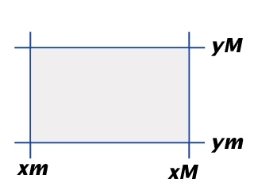

S'anomena retallat (clipping en anglès) al subprocés que permet eliminar la geometria exterior a una finestra (Finestra_2D o Vista dins el PV2D).
En la nostra estructuració del PV2D, donat un element geomètric (primitiva gràfica) analitzarem si es visualitza dins de la Vista. Si la resposta és negativa, no es rasteritza l'element (no es continua el procés de visualització amb aquest element). Si es visualitza parcialment, es modifica (retalla) l'element geomètric de manera que s'obtingui un element geomètric del mateix tipus però limitat a un conjunt de punts interiors a la Vista.
Es podria optar per desactivar el subprocés de retallat respecte a la Vista (Finestra_2D), en aquest cas es pintaria tota la geometria de l'escena malgrat no estigui emmarcada per la càmera. No obstant, sempre existirà retallat respecte a la finestra gràfica. No es poden pintar pixels de fora del frame-buffer.
De fet, el retallat el podem ubicar en el procés de visualització abans o després de la transformació món-dispositiu, per aquest motiu podem parlar tant de retallat respecte a la Finestra_2D com de retallat respecte a la Vista. En qualsevol cas obtindrem el mateix efecte visual en la imatge resultant. Escollir una opció o una altra és un compromís entre velocitat de càlcul amb aritmètica en coma flotant o entera, i que la transformació món-dispositiu s'apliqui a tota la geometria o només a la que es visualitzarà dins la Vista. En aquesta implementació hem optat pel retallat respecte a la Vista (fet comú en moltes llibreries gràfiques). Però, en l'anàlisi específic dels algorismes, en parlarem genèricament de retallat respecte d'una finestra amb rectes limitadores x=xm, y=ym, x=xM, y=yM que es consideren orientades de manera que els punts interiors a la finestra verifiquen la inigualtat: aix + biy + ci <= 0.
|  |
Recordeu que el retallat sempre ha de generar un element geomètric del mateix tipus que el que es compara amb la finestra, per tant, l'algorisme de retallat a aplicar serà específic per a cada tipus de primitiva gràfica. A més a més, cal esmentar que serà necessari optimitzar la seva eficiència ja que s'haurà d'executar molts cops en la visualització d'una escena mínimament complexa.
A continuació es presenten els algorismes específics
de retallat de primitives de tipus: punt, segment, polígon i s'il·lustren
amb exemples de la seva execució. El propòsit és que sigueu
capaços d'avaluar la complexitat d'aquests algorismes i les seves
limitacions, usualment estant implementats en els acceleradors gràfics
i/o llibreries gràfiques.